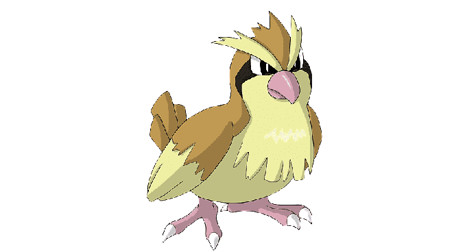

Charmander é um pokemon do tipo fogo, tem preferência por coisas quentes. Quando chove, diz-se que o vapor jorra da ponta de sua cauda.
Características:
Altura: 0,6 m
Peso: 8,5kg
Categoria: Lagarto
Habilidades:
Chama
Fraqueza: pokémons do tipo água, terra e pedra
Bulbasour
Bulbasour é um pokemon do tipo planta e venenoso, há uma semente de planta em suas costas desde o dia em que este Pokémon nasceu. A semente cresce lentamente.
Características:
Altura: 0,7 m
Peso: 6,9kg
Categoria: Semente
Habilidades:
crescer demais
Fraqueza: pokemons do tipo fogo, psíquico, voador e gelo
Abra
Abra é um pokemon do tipo psíquico, este Pokémon usa seus poderes psíquicos enquanto dorme. O conteúdo dos sonhos de Abra afeta os poderes que o Pokémon possui.
Características:
Altura: 0,9 m
Peso: 19,5kg
Categoria: Psi
Habilidades:
Foco interior
Sincronizar
Fraqueza: pokemons do tipo fantasma, sombrio e inseto
Psyduck
Psyduck é um pokemon do tipo psíquico, é constantemente assolado por uma dor de cabeça. Quando a dor de cabeça fica intensa, ele começa a usar poderes misteriosos. Parece incapaz de recordar tal episódio.
Características:
Altura: 0,8 m
Peso: 19,6 kg
Categoria: Pato
Habilidades:
Úmido
Nona Nuvem
Fraqueza: pokemons do tipo planta e elétrico
Rattata
Rattata é um pokemon do tipo normal, ele mastigará qualquer coisa com suas presas. Se você vir um, pode ter certeza de que mais 40 vivem na área.
Características:
Altura: 0,3 m
Peso: 3,5kg
Categoria: Rato
Habilidades:
Fugir
Estômago
Fraqueza: pokémon do tipo lutador
Staryu
Staryu é um pokemon do tipo água, se você visitar uma praia no final do verão, poderá ver grupos de Staryu se iluminando em um ritmo constante. O Pokémon Peixe mordisca ele, mas Staryu não se importa. Seu corpo se regenera rapidamente, mesmo que parte dele seja completamente arrancado.
Características:
Altura: 0,8 m
Peso: 34,5kg
Categoria: Forma de estrela
Habilidades:
Cura Natural
Iluminar
Fraqueza: pokemons do tipo planta e elétrico
Pidove
Pidove é um pokemon do tipo normal e voador, ende as pessoas vão, esses Pokémon seguem. Se você está espalhando comida para eles, tome cuidado - várias centenas deles podem se reunir de uma só vez.
Características:
Altura: 0,3 m
Peso: 2,1kg
Categoria:
pombo minúsculo
Habilidades:
Super Sorte
Big Pecks
Fraqueza: pokémons do tipo elétrico, gelo e pedra
Zubat
Zubat é um pokemon do tipo venenoso e voador, ele emite ondas ultrassônicas de sua boca para verificar seus arredores. Mesmo em cavernas apertadas, Zubat voa com habilidade.
Características:
Altura: 0,8 m
Peso: 7,5kg
Categoria: Morcego
Habilidades:
Foco interior
Fraqueza: pokémons do tipo psíquico, elétrico, gelo e pedra
Caterpie
Caterpie é um pokemon do tipo inseto, para proteção, ele libera um fedor horrível da antena em sua cabeça para afastar os inimigos.
Características:
Altura: 0,3 m
Peso: 2,9kg
Categoria: Verme
Habilidades:
Pó de Escudo
Fraqueza: pokémons do tipo fogo, voador e pedra
Ralts
Ralts é um pokemon do tipo psíquico e fada, os chifres em sua cabeça fornecem um forte poder que lhe permite sentir as emoções das pessoas.
Características:
Altura: 0,4 m
Peso: 6,6kg
Categoria: Sentimento
Habilidades:
Sincronizar
Vestígio
Fraqueza: pokemons do tipo fantasma, aço e venenoso
Vulpix
Vulpix é um pokemon do tipo fogo, enquanto jovem, tem seis lindas caudas. Quando cresce, várias novas caudas brotam.
Características:
Altura: 0,6 m
Peso: 9,9kg
Categoria: Raposa
Habilidades:
Fogo Relâmpago
Fraqueza: pokémons do tipo água, terra e pedra
Bellsprout
Bellsprout é um pokemon do tipo planta e venenoso, prefere lugares quentes e úmidos. Ele captura pequenos insetos com suas vinhas e os devora.
Características:
Altura: 0,7 m
Peso: 4,0 kg
Categoria: Flor
Habilidades:
Clorofila
Fraqueza: pokemons do tipo fogo, psíquico, voador e gelo
Furfrou
Furfrou é um pokemon do tipo psíquico, houve uma época em que os aristocratas competiam para ver quem conseguia aparar o pelo de seu Furfrou no estilo mais requintado.
Características:
Altura: 1,2 m
Peso: 28,0 kg
Categoria: Poodle
Habilidades:
Casaco de pele
Fraqueza: pokémon do tipo lutador
Lugia
Lugia é um pokemon do tipo psíquico e voador, as asas de Lugia carregam um poder devastador - um leve bater de suas asas pode destruir casas comuns. Como resultado, este Pokémon escolhe viver escondido nas profundezas do mar.
Características:
Altura: 5,2 m
Peso: 216,0 kg
Categoria: Mergulho
Habilidades:
Pressão
Fraqueza: pokemons do tipo fantasma, sombrio, elétrico, gelo e pedra
Squirtle
Squirtle é um pokemon do tipo água, quando retrai seu longo pescoço em sua concha, ele esguicha água com uma força vigorosa.
Características:
Altura: 0,5 m
Peso: 9,0 kg
Categoria: Tartaruga pequena
Habilidades:
Torrente
Fraqueza: pokemons do tipo planta e elétrico
Poliwag
Poliwag é um pokemon do tipo água, para Poliwag, nadar é mais fácil do que caminhar. O padrão de redemoinho em sua barriga é, na verdade, parte das entranhas do Pokémon que aparecem através da pele.
Características:
Altura: 0,6 m
Peso: 12,4 kg
Categoria: Girino
Habilidades:
Úmido
Absorver água
Fraqueza: pokemons do tipo planta e elétrico

Pidgey
Pidgey é um pokemon do tipo normal e voador, ele é muito dócil. Se atacado, muitas vezes chuta areia para se proteger, em vez de revidar.
Características:
Altura: 0,3 m
Peso: 1,8kg
Categoria: Pássaro minúsculo
Habilidades:
Olho Aguçado
Pés emaranhados
Fraqueza: pokémons do tipo elétrico, gelo e pedra
Moltres
Moltres é um pokemon do tipo fogo e voador, é um dos lendários Pokémon pássaro. Dizem que sua aparência indica a chegada da primavera.
Características:
Altura: 2,0 m
Peso: 60,0 kg
Categoria: Chama
Habilidades:
Pressão
Fraqueza: pokémons do tipo água, elétrico e pedra
Venonat
Venonat é um pokemon do tipo inseto e venenoso, veneno escorre de todo o seu corpo. Ele pega pequenos Pokémon insetos à noite que são atraídos pela luz.
Características:
Altura: 1,0 m
Peso: 300kg
Categoria: Inseto
Habilidades:
Olhos compostos
lentes coloridas
Fraqueza: pokemons do tipo fogo, voador, psíquico e pedra
Cubone
Cubone é um pokemon do tipo terra, quando a memória de sua falecida mãe o leva às lágrimas, seus gritos ecoam tristemente dentro do crânio que ele usa em sua cabeça. Este Pokémon usa o crânio de sua falecida mãe. Às vezes, os sonhos de Cubone o fazem chorar, mas cada lágrima que Cubone derrama o torna mais forte.
Características:
Altura: 0,4 m
Peso: 6,5kg
Categoria: Solitário
Habilidades:
cabeça de pedra
Pára-raios
Fraqueza: pokémons do tipo água, planta e gelo
Ponyta
Ponyta é um pokemon do tipo fogo, cerca de uma hora após o nascimento, a crina e a cauda ardentes de Ponyta crescem, dando ao Pokémon uma aparência impressionante. Suas pernas ficam fortes enquanto persegue seus pais. Corre o dia todo em campos e montanhas.
Características:
Altura: 1,0 m
Peso: 30,0 kg
Categoria: Cavalo de Fogo
Habilidades:
Fugir
Fogo Relâmpago
Fraqueza: pokémons do tipo água, terra e pedra
Tangela
Tangela é um pokemon do tipo planta, escondido sob um emaranhado de vinhas que cresce sem parar, mesmo que as vinhas sejam arrancadas, a verdadeira aparência deste Pokémon permanece um mistério. As vinhas de uma Tangela têm um aroma distinto. Em algumas partes de Galar, as videiras Tangela são usadas como ervas.
Características:
Altura: 1,0 m
Peso: 35,0 kg
Categoria: Vinha
Habilidades:
Clorofila
guarda folha
Fraqueza: pokemons do tipo fogo, voador, gelo, venenoso e inseto
Mewtwo
Mewtwo é um pokemon do tipo psíquico, seu DNA é quase o mesmo de Mew. No entanto, seu tamanho e disposição são muito diferentes.
Características:
Altura: 2,0 m
Peso: 122,0 kg
Categoria: Genética
Habilidades:
Pressão
Fraqueza: pokemons do tipo fantasma, sombrio e inseto
Eevee
Eevee é um pokemon do tipo normal, sua capacidade de evoluir em muitas formas permite que ela se adapte suave e perfeitamente a qualquer ambiente. Seu código genético é irregular. Pode sofrer mutação se for exposto à radiação das pedras elementares.
Características:
Altura: 0,3 m
Peso: 6,5kg
Categoria: Evolução
Habilidades:
Fugir
Adaptabilidade
Fraqueza: pokémon do tipo lutador
Horsea
Horsea é um pokemon do tipo água, horsea faz sua casa em oceanos com correntes suaves. Se este Pokémon estiver sob ataque, ele cospe tinta preta e foge. Eles nadam com movimentos de dança e causam a formação de redemoinhos. Horsea competem para ver qual deles pode gerar o maior redemoinho.
Características:
Altura: 0,4 m
Peso: 8,0 kg
Categoria: Dragão
Habilidades:
Natação rápida
Atirador de elite
Fraqueza: pokemons do tipo planta e elétrico
Seel
Seel é um pokemon do tipo água, adora condições de frio congelante. Gosta de nadar em um clima gelado de cerca de 14 graus Fahrenheit (-10 graus celcius).
Características:
Altura: 1,1 m
Peso: 90,0 kg
Categoria: Leão Marinho
Habilidades:
gordura grossa
hidratação
Fraqueza: pokemons do tipo planta e elétrico
Dodou
Dodou é um pokemon tipo normal e voador, suas asas curtas dificultam o vôo. Em vez disso, este Pokémon corre em alta velocidade com pernas desenvolvidas.
Características:
Altura: 1,4 m
Peso: 39,2kg
Categoria: Pássaro Gêmeo
Habilidade:
Fugir
Madrugador
Fraqueza: pokémons do tipo elétrico, gelo e pedra
Butterfree
Butterfree é um pokemon do tipo inseto e voador, ele adora o néctar das flores e pode localizar canteiros de flores que tenham até pequenas quantidades de pólen.
Características:
Altura: 1,1 m
Peso: 32,0 kg
Categoria: Borboleta
Habilidades:
Olhos compostos
Fraqueza: pokemons do tipo fogo, voador, elétrico, gelo e pedra
Clefairy
Clefairy é um pokemon do tipo fada, dizem que a felicidade virá para aqueles que virem uma reunião de Clefairy dançando sob a lua cheia. Seu comportamento adorável e choro o tornam altamente popular. No entanto, este Pokémon fofo raramente é encontrado.
Características:
Altura: 0,6 m
Peso: 7,5kg
Categoria: Fada
Habilidades:
Amuleto bonito
Guarda Mágica
Fraqueza: pokemons tipo aço e venenoso
Pikachu
Pikachu é um pokemon do tipo elétrico, quando está com raiva, descarrega imediatamente a energia armazenada nas bolsas de suas bochechas. Quando vários desses Pokémon se reúnem, sua eletricidade pode aumentar e causar tempestades elétricas.